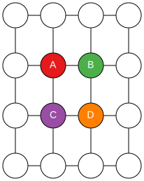

Verification and Validation of MOM6
Alistair Adcroft
Robert Hallberg
Marshall Ward
2020 June 8
Verification
Am I building the product right?
Validation
Am I building the right product?
Barry Boehm, Software Risk Management (1989)
Verification
What are the design specifications of my model?
Does it compile on target platforms?
Are the equations dimensionally consistent?
Does parallelization change the answers?
Verification is the confirmation of design specifications.
Validation
Does our model meet operational needs?
Does it produce realistic simulations?
Are relevant physical features present?
Can I reproduce my old simulations?
Validation is an assessment of the final product.
V&V in Development
All software development models rely on some form of verification or validation.
The waterfall method (upper left) has a single stage of development, like building a bridge or launching a space rocket, so validation is not possible. Verification must be extremely thorough.
More iterative models like the V-model treat the development process as verification, and then use validation to re-define the verification steps.
Modern Agile methods define multiple development cycles, including verification and validation after each "scrum". Scrum-like methods can blur the distinction between verification and validation.
V&V in MOM6
Fork from a community repository
Apply any modifications
Submit as Pull Request™
Trigger V&V events
Automated verification
Manual validation
All contributions must pass verification and validation before merge.
Verification Tests
grid
Symmetric/Asymmetric memory grids
layout
1×1 and 2×1 domain decomposition
rotation
Index rotation
restart
Restart at mid-run
repro
Optimized reproducible mode
openmp
OpenMP (single-thread)
nan
NaN array initialization
dim
Dimensional scaling
Each test requires bit reproducibility
MOM6 Validation
Site-specific
Gaea Pipeline
Human validation
Bit reproducibility
Identical code and input, different math libraries
Floating point review
\[(-1)^s \times 1.\{\text{frac}\}\times 2^{\{\text{exp}\}}\]
Smallest fractional diff: \(2^{-52} \approx 2.2 \times 10^{-16}\)
17 digits to uniquely specify a result
Two unique representations of zero: \(\pm 0\)
Probably old news to everyone, but just as a quick review:
Floating point numbers consist of three fields:
A sign bit
A power-of-two exponent (plus an offset)
A fractional field (52 bits, in double precision)
There are a few other considerations here, like the Inf and NaN cases, or denormal numbers, but we don't need to discuss these for now.
The main thing to note for now is that the smallest fractional value is 2^-52, or about 2.2 x 10^-16. This defines a threshhold for reproducibility.
The other thing to quickly note is that both +/-0 exist in this format, which we'll mention later.
Addition Associativity
What is \(10^{-16} + 1 - 1\) ?
\[\begin{aligned}
(10^{-16} + 1) - 1 &= 0 \\
10^{-16} + (1 - 1) &\equiv 10^{-16}
\end{aligned}\]
Residuals below \(2\times10^{-16}\) may be lost.
10^-16 is below the 2x10^-16 threshold, so is lost in the first summation.
Cancellation in the second summation preserves this value.
More Addition Examples
Let \(s = 1 + 2 \times 10^{-16}\) . What is \((s + 1) - 1\) ?
\[\begin{aligned}
s + 1 &= 2 \\
(s + 1) - 1 &= 1 \neq s
\end{aligned}\]
Manipulation of \(s\) shifted the least resolvable value.
The example here is making the same point as the last one, but showing that the least resolvable value can change (or "float") during a calculation.
Even though we can initially resolve the 2 x 10^-16 fraction, this fraction is immediately lost once we add +1 to the result, shifting the fraction.
So it's not enough to just look for resolvable residuals, because this "floats" to fit the value.
Multiplication associativity
If \(a = b = 1.5\) , and \(c = 1 + 2^{-52}\) , then
\[\begin{aligned}
(a \times b) \times c &\equiv 2.25 + 2^{-51} \\
a \times (b \times c) &\equiv 2.25 + 2^{-50}
\end{aligned}\]
(Actual results depend on rounding rules)
Associativity of multiplication is overall less volatile, since the largest variations are handled in the exponent.
The fractional part can only increase the exponent, and at most only one bit is lost: (1 <= 1.xxx * 1.xxx < 4)
But it is still revelant, and trailing bits can be lost, as seen in the example here.
Note however that multiplication of the exponent 2^{exp} is a pure integer operation and is a reversible operation, up to over/underflow. (It also just happens to also manipulate the {frac}).
Sample program
program rounding
use iso_fortran_env, only : real64
implicit none
real(kind=real64) :: a, b, c
a = 1.5
b = 1.5
c = 1.0000000000000002_real64
print '(a, es23.17)', "(a * b) * c = ", (a * b) * c
print '(a, es23.17)', "a * (b * c) = ", a * (b * c)
end program rounding
Integrity of parentheses
V&V requires integrity of parentheses
GCC Fortran:
gfortran -fprotect-parens ... # default
gfortran -Ofast ... # Sets -fno-protect-parensIntel Fortran:
ifort -assume protect-parens # Not defaultNote: Standard requires (J3/18-007r1, 10.1.5)
Parallel summation
Problem is extended to parallel sums:
See hallberg & adcroft
Rotational Invariance
More like an index rotation...
Rotational invariance
\(\phi^{(c)}_{i,j} = \frac{1}{4} (\phi_a + \phi_b + \phi_c + \phi_d)\)

\(\frac{1}{4} ( (\phi_A + \phi_B) + (\phi_C + \phi_D) )\)
\(\frac{1}{4} ( (\phi_A + \phi_D) + (\phi_B + \phi_C) )\)
Rotational invariance
When all else fails, re-order the algorithm...
Checksum validation
Compute domain (no halos, no symmetric boundary)
sum(abs()) (negative zero!)
"Hash":
Min, max, mean (reproducible)
Bitcount checksums (incl. halo shifted counts)
Paired sums for rotational invariance
Dimensional scaling
Float: (-1)^s * 1.(mmm...m) * 2^(nnn...n)
Bits: smmm....mnnn....n
2^N scaling is an integer shift of yyyy which is reproducibly reversible
... up to over/underflow of yyyy!
Ideal procedure:
Scale at input
Manipulate rescaled numbers
De-scale at output, checksum, etc
Examples of Dimensional Errors
Test build configuration
GCC Fortran 9.x
Full warnings
Permit float inequality with zero
Stack initialization
Signal NaN for float
2^(N-1) - 1 for integer, logical
Running on Travis
Makefile is standalone, but can be configured by Travis:
DO_REGRESSION_TESTS
MOM_TARGET_SLUG
MOM_TARGET_LOCAL_BRANCH
TODO
Valgrind testing
Code coverage
Zero-warnings
And the future
Cyclomatic (McCabe) complexity
AST analyzer
Fortran lint tools (flint??)
Development Guidelines
Use parentheses!
Are they honored?
Am I preserving residuals?
Use reproducible_sum()
Even better: Don't do global sums!
Use rotationally invariant stencils
Aggressively run the verification tests